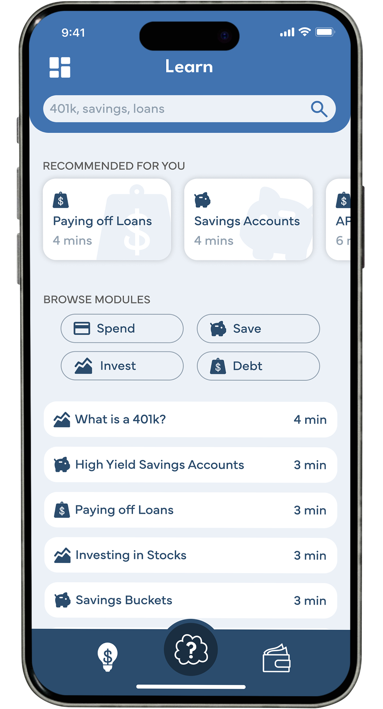
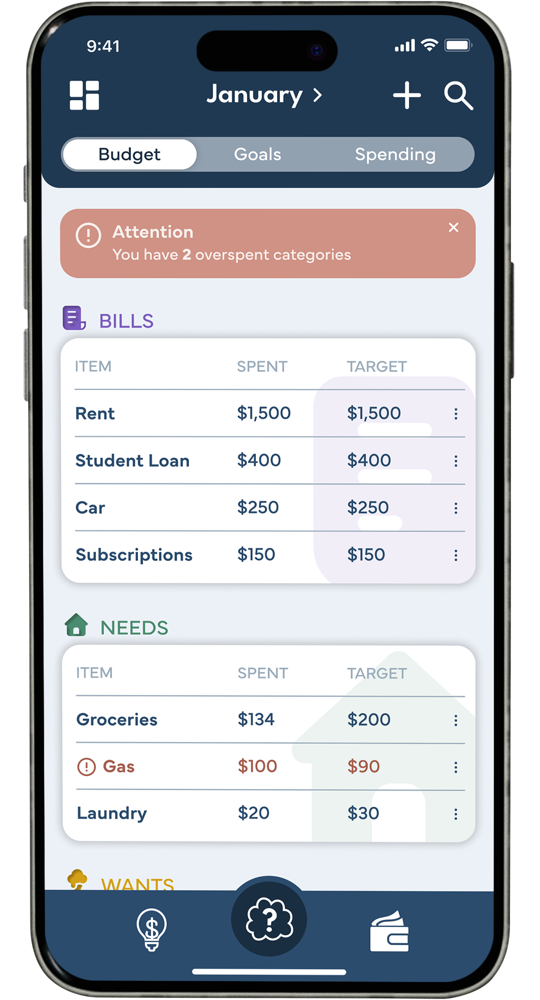
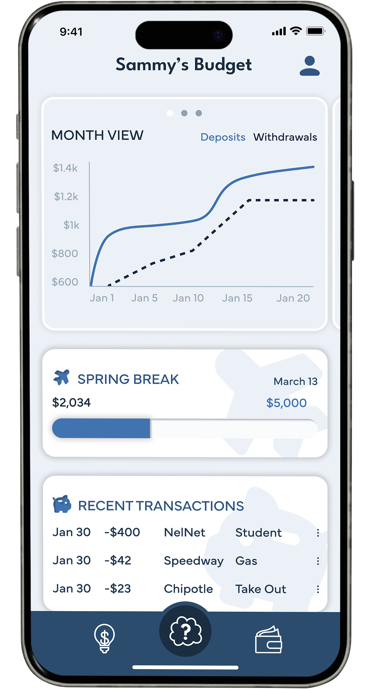

Guide to Loan Types
This guide will break down five common loan types, their purposes, and how they work. By the end, you'll know how to navigate the loan application and approval process and make informed decisions about borrowing.

Loan 1. Student Loans
Higher education often requires significant funds, and student loans can make this possible. There are two main types: federal and private. Federal Student Loans are provided by the government, often at lower interest rates with flexible repayment options. Private Student Loans are offered by banks or private lenders, these loans typically have higher interest rates and stricter repayment terms.
Loan 2. Auto Loans
Need a car to commute or gain independence? An auto loan helps you finance a vehicle over time. These loans are usually secured, meaning the car itself acts as collateral—the lender can repossess it if you fail to make payments.
Loan 3. Personal Loan
A personal loan provides flexible funding for expenses like consolidating debt, covering unexpected bills, or making large purchases. These loans can be secured (backed by collateral) or unsecured (no collateral required).
Download Penni Today!


